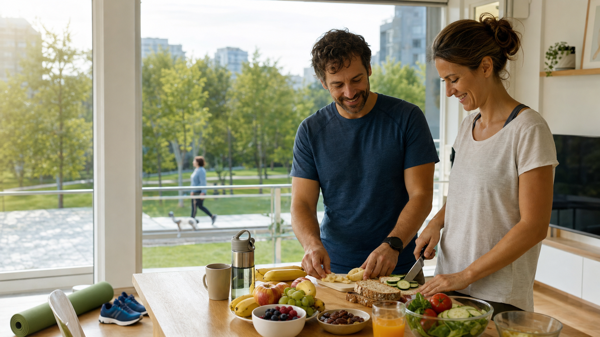

10.Sănătate și stil de viață

La sfârșitul lecției vei ști
Să descriiobiceiuri legate de alimentație, mișcare, somn și echilibru personal.
Să recomanzischimbări realiste pentru un stil de viață mai sănătos.
Să foloseșticondiționalul prezent și structuri pentru exprimarea ipotezei.
Să redacteziun plan personal de sănătate clar, echilibrat și realizabil.
Vocabular tematic
I. Comprehensiune de lectură
model B1A. Citește textul
Un plan nou de învățare
Irina a terminat facultatea acum câțiva ani, dar nu a încetat să învețe. Lucrează într-o bibliotecă universitară și observă zilnic cât de mult se schimbă modul în care oamenii studiază. Unii studenți vin cu manuale și caiete, alții folosesc platforme online, iar mulți combină cursurile clasice cu materialele digitale.
În ultimul an, Irina a decis că vrea să își continue formarea. S-a înscris la un curs de comunicare academică pentru că are nevoie să scrie rapoarte mai clare și să prezinte proiecte în fața colegilor. La început i-a fost greu să își organizeze timpul, deoarece lucra în fiecare zi și avea și responsabilități acasă.
După câteva săptămâni, a făcut un plan simplu. Luni și miercuri citește textele pentru curs, marți repetă vocabularul nou, iar joi pregătește exercițiile scrise. În weekend, se întâlnește online cu doi colegi ca să discute temele și să își corecteze greșelile. Spune că învață mai bine atunci când are un scop clar și când primește feedback.
La finalul cursului, Irina trebuie să susțină o prezentare de zece minute despre rolul bibliotecii în viața studenților. Ea crede că educația nu se termină după diplomă, ci continuă prin curiozitate, practică și disciplină. Dacă va reuși să termine cursul cu bine, vrea să urmeze și un program scurt de management educațional.
B. Adevărat sau fals
- Irina lucrează într-o bibliotecă universitară.
- Irina s-a înscris la un curs de comunicare academică.
- La început, Irina avea foarte mult timp liber.
- În weekend, Irina învață singură, fără colegi.
- La final, Irina trebuie să susțină o prezentare.
C. Răspunde la întrebări
- De ce s-a înscris Irina la curs?
- Când citește textele pentru curs?
- Ce face joia?
- Cum învață mai bine Irina?
- Ce vrea să urmeze după acest curs?
D. Găsește în text
- Două resurse de învățare: și .
- Două activități de studiu: și .
- Un motiv pentru curs: .
- O idee despre educație: .
Cheie orientativă
A/F: 1-A, 2-A, 3-F, 4-F, 5-A. C: ca să scrie rapoarte mai clare și să prezinte proiecte; luni și miercuri; pregătește exercițiile scrise; cu scop clar și feedback; management educațional. D: manuale, platforme online; citește, repetă, pregătește, discută; are nevoie de comunicare academică; educația continuă după diplomă.
II. Gramatică și vocabular
că · scopA. Teorie: propoziții cu „că”
B. Exprimarea scopului
| Structură | Exemplu | Utilizare |
|---|---|---|
| pentru a + infinitiv | Studiez pentru a obține un certificat. | stil mai formal |
| ca să + conjunctiv | Învăț seara ca să iau examenul. | stil frecvent în vorbire |
| cu scopul de a + infinitiv | Urmez cursul cu scopul de a-mi îmbunătăți comunicarea. | stil academic |
| pentru + substantiv | Mă pregătesc pentru prezentarea finală. | scop nominal |
| am nevoie să + conjunctiv | Am nevoie să repet vocabularul. | necesitate |
C. Completează cu „că”
- Irina spune educația nu se termină după diplomă.
- Profesorul crede studenții trebuie să participe activ.
- Noi știm examenul cere pregătire constantă.
- Observ platformele online sunt utile.
- Mă bucur am primit feedback bun.
D. Transformă pentru a exprima scopul
- Urmez un curs. Vreau să scriu mai clar. → Urmez un curs ca să...
- Repet vocabularul. Vreau să vorbesc mai fluent. → Repet vocabularul pentru a...
- Particip la seminar. Vreau să pun întrebări. → Particip la seminar ca să...
- Citesc articole. Vreau să înțeleg tema. → Citesc articole cu scopul de a...
- Fac un plan. Vreau să îmi organizez timpul. → Fac un plan pentru a...
E. Alege structura potrivită
- Învăț română pot comunica la universitate. (că / ca să)
- Cred acest curs este util. (că / pentru a)
- Mă pregătesc examenul oral. (pentru / că)
- Am nevoie repet mai des. (să / că)
- Studiez zilnic a progresa. (pentru / că)
F. Derivare de vocabular
| Cuvânt de bază | Completează propoziția |
|---|---|
| a educa | este importantă pentru dezvoltare. |
| a învăța | Procesul de cere răbdare. |
| a evalua | La final avem o orală. |
| a prezenta | finală durează zece minute. |
| a motiva | Un scop clar crește cursantului. |
G. Construiește propoziții
Scrie cinci propoziții despre educația ta. Folosește: 1) cred că, 2) știu că, 3) ca să, 4) pentru a, 5) cu scopul de a.
Cheie orientativă
C: că, că, că, că, că. E: ca să, că, pentru, să, pentru. F: educația, învățare, evaluare, prezentarea, motivația.
III. Exprimare scrisă
plan educaționalA. Plan personal
Scrie un plan educațional de 120-150 de cuvinte. Include ce vrei să înveți, de ce ai ales acest obiectiv, ce resurse vei folosi și cum vei verifica progresul.
B. Email către profesor
Scrie un email politicos către un profesor. Cere informații despre un curs, program, evaluare și certificat. Explică de ce te interesează cursul.
C. Autoevaluare
Completează trei propoziții: „Știu că...”, „Am nevoie să...”, „Voi continua să învăț ca să...”.
IV. Ascultare
dialog academicAscultă textul citit de profesor sau folosește transcrierea pentru exercițiu.
Andrei merge la secretariatul facultății pentru că vrea informații despre un curs opțional. Secretara îi spune că înscrierea se face online până vineri și că studenții trebuie să aleagă două seminare. Andrei întreabă dacă la final primește un certificat. Secretara explică faptul că certificatul se oferă doar studenților care participă la minimum opt întâlniri și trimit proiectul final. Andrei spune că are nevoie de acest curs ca să își îmbunătățească prezentările orale.
- Andrei merge la facultății.
- Înscrierea se face până vineri.
- Studenții trebuie să aleagă două .
- Certificatul se oferă dacă participă la minimum întâlniri.
- Andrei vrea să își îmbunătățească prezentările .
Cheie orientativă
secretariatul, online, seminare, opt, orale.
V. Exprimare orală
model examen B1A. Conversație dirijată
Răspunde la întrebări: Ce ai studiat? Ce cursuri ai urmat? Cum înveți cel mai bine? Ce obiectiv educațional ai acum?
B. Monolog
Vorbește 2 minute despre o experiență de învățare importantă. Include locul, profesorii sau colegii, dificultățile, rezultatul și ce ai învățat despre tine.
C. Joc de rol
Studentul A este consilier educațional, iar Studentul B vrea să aleagă un curs. Discutați despre obiective, program, costuri, evaluare și certificat.
Subiecte posibile
I. Comprehensiune de lectură
model B1A. Citește textul
Schimbări mici, rezultate importante
După o perioadă foarte aglomerată la serviciu, Radu a observat că nu mai avea energie. Dimineața pleca fără să mănânce, la prânz comanda de obicei mâncare rapidă, iar seara stătea mult în fața ecranului. Dormea aproximativ șase ore și spunea mereu că nu are timp pentru sport.
Într-o zi, a decis să nu caute o soluție perfectă, ci câteva schimbări pe care le-ar putea păstra. Și-a pregătit micul dejun de seara, a început să ia o sticlă cu apă la serviciu și a înlocuit liftul cu scările. De trei ori pe săptămână, merge pe jos câte treizeci de minute. Dacă vremea ar fi rea, ar face exerciții ușoare acasă.
Radu a schimbat și programul de seară. Cu o oră înainte de culcare, închide telefonul și citește. Nu respectă planul în fiecare zi, dar nu renunță când apare o excepție. După două luni, doarme mai bine, se concentrează mai ușor și se simte mai calm.
El spune că un stil de viață sănătos nu înseamnă doar alimentație și sport. Pentru el contează și odihna, relațiile cu oamenii apropiați și pauzele adevărate. Dacă ar avea mai mult timp liber, ar găti mai des și ar merge cu bicicleta în weekend.
B. Adevărat sau fals
- Radu avea multă energie după perioada aglomerată.
- A început să își pregătească micul dejun din timp.
- Face o plimbare de treizeci de minute în fiecare zi.
- Radu renunță la plan când nu îl respectă perfect.
- Pentru el, relațiile și odihna fac parte din sănătate.
C. Răspunde la întrebări
- Ce obiceiuri îl făceau pe Radu să se simtă obosit?
- Ce trei schimbări a introdus în timpul zilei?
- Ce ar face dacă vremea ar fi rea?
- Cum s-a schimbat starea lui după două luni?
- Ce ar face dacă ar avea mai mult timp liber?
D. Lucru cu vocabularul
- Găsește în text un sinonim pentru „odihnă de noapte”.
- Găsește două expresii despre activitatea fizică.
- Explică expresia „pauze adevărate”.
- Formulează o recomandare pentru Radu folosind „ar trebui să”.
Cheie orientativă
B: F, A, F, F, A. C: sărea peste micul dejun, mânca rapid, stătea la ecran și dormea puțin; mic dejun pregătit, apă, scări; ar face exerciții acasă; doarme și se concentrează mai bine, este mai calm; ar găti și ar merge cu bicicleta.
II. Gramatică și vocabular
condițional · ipotezăA. Condiționalul prezent
Îl folosim pentru recomandări politicoase, dorințe și situații imaginare. Se formează cu aș, ai, ar, am, ați, ar + infinitiv.
| Persoana | a face | a mânca | a se odihni |
|---|---|---|---|
| eu | aș face | aș mânca | m-aș odihni |
| tu | ai face | ai mânca | te-ai odihni |
| el / ea | ar face | ar mânca | s-ar odihni |
| noi | am face | am mânca | ne-am odihni |
| voi | ați face | ați mânca | v-ați odihni |
| ei / ele | ar face | ar mânca | s-ar odihni |
B. Recomandări și ipoteze
C. Completează condiționalul
- Eu (a reduce) timpul petrecut la ecran.
- Tu (a putea) să mergi pe jos la serviciu.
- Maria (a se odihni) mai mult.
- Noi (a găti) împreună.
- Voi (a face) sport în weekend.
D. Construiește ipoteze
- Am mai mult timp. Merg la înot. → Dacă aș avea mai mult timp, ...
- Vremea este bună. Facem o plimbare lungă. → Dacă vremea ar fi bună, ...
- Nu mai beau cafea seara. Dorm mai bine. → Dacă nu aș mai bea cafea seara, ...
- Avem o bucătărie mai mare. Gătim mai des. → Dacă am avea o bucătărie mai mare, ...
E. Alege cuvântul potrivit
- Pentru o bună , beau apă regulat. (hidratare / oboseală)
- După o zi aglomerată, am nevoie de . (odihnă / porție)
- Un program de somn mă ajută. (regulat / rapid)
- Plimbarea este o formă de activitate . (fizică / alimentară)
Cheie orientativă
C: aș reduce, ai putea, s-ar odihni, am găti, ați face. E: hidratare, odihnă, regulat, fizică.
III. Exprimare scrisă
plan personal de sănătateA. Sarcina principală din programă
Scrie un plan personal de sănătate de 140–170 de cuvinte. Include situația actuală, trei obiective realiste, acțiuni concrete pentru alimentație, mișcare și somn, un obstacol posibil și o soluție formulată cu „dacă... aș...”.
B. Recomandări pentru un prieten
Un prieten este obosit, sare peste mese și nu face pauze. Scrie-i un mesaj de 100–120 de cuvinte. Folosește „ar trebui să”, „ai putea să” și „în locul tău, aș...”.
C. Autoevaluare
Completează: „Un obicei bun pe care îl am este...”, „Aș vrea să schimb...”, „Dacă aș începe de mâine, aș...”.
IV. Ascultare
recomandăriAscultă textul citit de profesor, apoi completează exercițiul. Transcrierea poate fi afișată pentru verificare.
Ioana lucrează de acasă și observă că stă prea mult pe scaun. La prânz mănâncă în fața calculatorului, iar seara o doare spatele. O prietenă îi recomandă să facă o pauză scurtă la fiecare oră și să iasă la plimbare după masă. Ioana spune că, dacă și-ar organiza mai bine programul, ar putea face mișcare înainte de lucru. De săptămâna viitoare, ar vrea să meargă la înot de două ori pe săptămână și să pregătească prânzul de seara.
- Ioana lucrează de .
- Seara o doare .
- Ar trebui să facă o pauză la fiecare .
- Ioana ar putea face mișcare înainte de .
- Ar vrea să meargă la înot de ori pe săptămână.
Cheie orientativă
acasă, spatele, oră, lucru, două.
V. Exprimare orală
model examen B1A. Conversație dirijată
Ce înseamnă pentru tine un stil de viață echilibrat? Ce obicei sănătos ai? Ce ai vrea să schimbi? Cum te odihnești după o zi grea?
B. Monolog
Vorbește 2–3 minute despre o schimbare care ți-ar îmbunătăți stilul de viață. Prezintă motivul, pașii, dificultățile și rezultatul dorit.
C. Joc de rol
Studentul A are un program aglomerat și este mereu obosit. Studentul B oferă recomandări realiste despre mese, mișcare, somn și pauze. Schimbați rolurile.